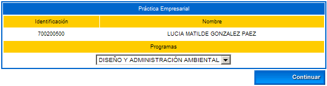

Funcionalidad que permite que el estudiante se inscriba a una práctica empresarial ofrecida por la institución, o para que éste sugiera la realización de una práctica propia. La etapa del desarrollo de la práctica de un alumno puede representar una parte primordial en la formación académica del mismo, constituyéndose en un requisito esencial de cumplimiento dentro del proceso de grado establecido por el programa. Inicialmente se debe seleccionar el programa al cual pertenece y dar clic sobre la opción Continuar.

Luego el sistema despliega una interfaz en la cual se encuentran disponibles las siguientes funcionalidades: Sugerir oferta de práctica, Consultar informes de seguimiento e Inscripción a oferta de práctica.
15.1 SUGERIR OFERTA DE PRÁCTICA
Funcionalidad que permite que el estudiante gestione o sugiera una oferta de práctica. Dispone de las opciones Agregar, Eliminar y Continuar.
Opción Agregar: Permite que el alumno ingrese la siguiente información: Razón social, nombre de la empresa, área de Práctica, Requisito de la Empresa, Descripción Labor, Perfil exigido por la empresa. Una vez esté seguro de que la información diligenciada es la correcta deberá dar clic sobre la opción Registrar. El sistema solicita confirmación de la adición, si la respuesta es afirmativa se emitirá un mensaje indicando el éxito del proceso.
Opción Eliminar: Esta opción le permite al estudiante borrar un registro ya creado. El sistema solicita confirmación del borrado del registro, si la respuesta es afirmativa se emitirá un mensaje indicando el éxito del proceso.
Opción Continuar: Esta opción permite dar una visualización completa a la oferta de práctica sugerida por el estudiante.
15.2 CONSULTAR INFORMES DE SEGUIMIENTO
Este proceso está relacionado directamente con la gestión que debe realizar el administrador del módulo de Práctica Empresarial, ya que éste debe revisar la inscripción de la práctica registrada por el alumno (Ver numeral 15.3). Una vez se ha aprobado la práctica y se ha asociado el coordinador de ésta, el estudiante podrá consultar los informes de seguimiento. Inicialmente se debe seleccionar la práctica en cuestión, luego se elige el seguimiento y se da clic sobre la opción Continuar.
El sistema despliega una interfaz en la cual se previsualiza el contenido completo del informe de seguimiento realizado sobre el desempeño del estudiante.

15.3 INSCRIPCIÓN A OFERTA DE PRÁCTICA
Funcionalidad que permite que el alumno se inscriba a una de las prácticas ofertadas por la institución. El sistema muestra los datos básicos del estudiante y el listado de prácticas ofrecidas. Inicialmente debe elegir el tipo y periodo respectivo, luego selecciona uno de los registros, una vez esté seguro de que la información diligenciada es la correcta deberá dar clic sobre la opción Registrar. El sistema solicita confirmación de la adición, si la respuesta es afirmativa se emitirá un mensaje indicando el éxito del proceso.
Funcionalidad que permite realizar el proceso de inclusión de asignaturas, posterior a la matrícula académica en línea. Es habilitado por la activación de las fechas desde el calendario académico con el proceso denominado INCLUSIÓN DE MATERIAS. Inicialmente el sistema muestra las asignaturas del estudiante que ya fueron inscritas en la matrícula. Dispone de las funcionalidades: Matricular y Horario estudiante.
Esta funcionalidad permite incluir las materias que están disponibles y que el alumno desea cursar. El sistema muestra un listado de asignaturas con los respectivos grupos. Dispone de las opciones: Ver horario, Ver equivalencias y Registrar.

Si el estudiante desea Ver horario, debe seleccionar una de las materias, luego dar clic en esta opción. Se despliega una interfaz que muestra los datos organizados por días de la semana, visualiza el docente, el recurso (salón, laboratorio, entre otras), la hora de inicio y fin de la clase, y el lapso de tiempo asociado al periodo académico. Si todavía no tiene docente asignado aparecen las iniciales NDOC. Si no tiene recurso físico asignado para la clase aparecen las iniciales NRF.
Si el estudiante desea Ver equivalencias, debe seleccionar una de las materias, luego dar clic en esta opción. Se despliega una interfaz que muestra un listado de las materias equivalentes, de las cuales puede seleccionar del combo el grupo Ver horario e incluirla dando clic sobre la opción Registrar.
Esta opción permite que el estudiante consulte el horario de las materias equivalentes.
Una vez el estudiante se encuentre seguro de las asignaturas que va a incluir, deberá seleccionarla y dar clic sobre esta opción. El sistema solicita confirmación de la adición, si la respuesta es afirmativa se emitirá un mensaje indicando el éxito del proceso. Posterior a esto, deberá dar clic sobre la opción Finalizar, realizado este evento nuevamente el sistema solicita la confirmación de la terminación del proceso, si la respuesta es afirmativa el sistema genera el siguiente resumen donde se visualizan las materias incluidas, los docentes y recursos físicos. Dispone de la opción Imprimir.
Opción Imprimir. Se puede realizar una impresión en formato pdf tal como se muestra en el siguiente ejemplo, este puede ser almacenado en cualquier medio magnético.
Funcionalidad que permite consultar el horario del estudiante, una vez ha realizado el proceso de inclusión de asignaturas.
Esta funcionalidad permite que el estudiante desde su Vortal gestione una solicitud de transferencia interna en el periodo académico en el cual se encuentra activo. Inicialmente el sistema muestra la siguiente interfaz en la cual se evidencia que todavía no existe ninguna solicitud. Dispone de las opciones: Agregar y Eliminar.
Opción Agregar: Esta opción permite que el alumno haga el trámite de solicitud para transferencia interna. Debe seleccionar la unidad regional, la metodología, modalidad, el sistema genera un listado de programas de acuerdo a los criterios elegidos. Luego elige el programa y periodo académico, e ingresa las observaciones pertinentes. Finalmente debe dar clic sobre la opción Registrar. El sistema solicita confirmación de la adición, si la respuesta es afirmativa se emitirá un mensaje indicando el éxito del proceso.
El sistema muestra de forma ilustrativa un mensaje alusivo al proceso de transferencia realizado por el estudiante, tal como se muestra en el siguiente ejemplo:
Opción Eliminar: Esta opción le permite al estudiante borrar un registro ya creado. El sistema solicita confirmación del borrado del registro, si la respuesta es afirmativa se emitirá un mensaje indicando el éxito del proceso.
Finalizado el proceso, el estudiante puede consultar los registros que quedan almacenados en el sistema, como se indica a continuación: